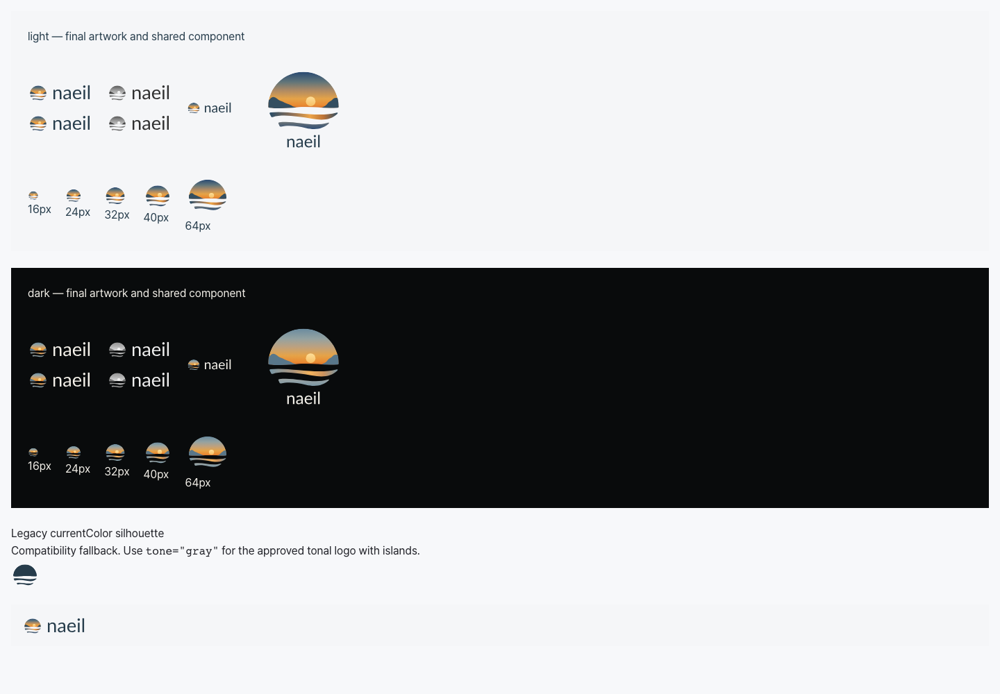
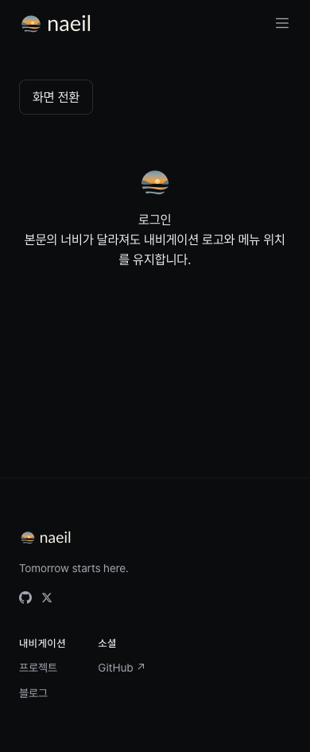

naeil 브랜드 관리·공유 UI 통합 검수
후속 변경: 사용자가 앞의 마침표 유지를 선택하여 현재 승인 버전은 .naeil 1.1.0이다. 최신 검수 기록. 아래 내용은 점 없는 1.0.1 통합 당시의 기록으로 보존한다.
2026-10-11 · 브랜드 1.0.1 · UI 패키지 변경은 unreleased
승인된 노을·섬 심볼과 Lato Regular 400 워드마크를 독립 브랜드 원본으로 관리하고, 공유 Logo가 그 원본에서 생성된 그래픽을 사용하도록 연결했다. Nav·Footer·사이트 로그인에 적용했으며 npm 게시와 사이트 배포는 수행하지 않았다.
관리 경계
pnpm build:brand는 승인 SVG의 체크섬을 확인하고 React 그래픽, Lato 고지와 이 사이트 아이콘을 생성한다. pnpm check:brand는 원본·생성 결과의 불일치를 검사하며 패키지와 Storybook 빌드 전에 실행된다. 브랜드 변경은 새 릴리스 폴더를 만들고 current.json을 갱신한다. 기존 1.0.0은 보존했다.
UI 본문 Pretendard와 중립 색 토큰은 유지했다. 워드마크는 경로이므로 소비자에게 Lato 설치나 외부 파일 요청이 필요 없다. npm에는 생성 코드와 Lato 고지가 들어가며, 연구 자료와 전체 PNG·ZIP은 들어가지 않는다.
소비 프로젝트 사용
import { Logo } from '@naeil/ui/components/logo';
<Logo variant="horizontal" size={28} />
<Logo tone="gray" size={40} />
<Logo theme="dark" variant="footer" size={20} />
기존 size·className·mono와 공개 import 경로, Nav의 brandSlot을 유지했다. 기본 표기는 .naeil에서 naeil로 바뀐다. size는 높이이며 비율은 유지한다. 자동 테마는 가까운 명시적 테마를 따르고, 없으면 OS 설정 및 그 변경을 따른다. 전체 API·이전 안내.
tone="gray"는 섬의 농담이 있는 승인된 회색 A다. mono는 기존 currentColor 호환 실루엣으로 내부 해·섬의 구별이 사라진다. 승인된 회색 표현이나 별도 인쇄 원본으로 취급하지 않는다.
실행한 검증
| 검증 | 결과·범위 |
|---|
| check:brand / check:types | 통과. 원본 해시·생성 결과·ICO RGBA 프레임·TypeScript |
| pnpm test | 9개 파일, 46개 테스트 통과. Logo 계약 5개 포함 |
| check:contrast / 변경 TS·TSX ESLint | 통과. 대비 검사는 기존 UI 토큰 조합에 대한 결과 |
| build:pkg / build:storybook | 통과. Brand/Logo Docs·Usage·Application, 원본 SVG 비교, Lato 고지 포함 |
| Playwright brand.spec.ts | Chromium·WebKit 16/16 통과. 밝음·어두움, 390/1440px, 중첩 테마, OS 자동 전환, SVG ID, axe, 메뉴·콘텐츠 폭 전환 시 내비게이션 위치, 실제 Docs |
| check:package | 통과. npm tarball 경계, Next 없는 React 소비자에서 타입·SSR·Vite 빌드·실제 브라우저 테마, 독립 Next 소비자 프로덕션 빌드·기본 Nav/Footer |
| 실제 사이트 pnpm build | 통과. 실행 서버의 favicon.ico·icon.svg·apple-icon.png 응답 200 및 MIME 확인 |
읽기 전용 추가 코드 검토에서 차단 사항은 없었다. 제안된 버전 선택 중복과 OS fallback 검증 누락은 current.json 통합과 브라우저 테스트로 보완했다. 실제 렌더에서 원본 SVG와 React 컴포넌트를 함께 확인했다. 이미지의 소수점 크기 때문에 안티앨리어싱 차이가 있으며 캡처 픽셀의 완전 일치를 주장하지 않는다.
ICO 1.0.1 호환 수정
사이트 production build에서 1.0.0 ICO의 PNG 프레임이 RGB여서 Next.js가 거부하는 문제를 발견했다. 1.0.1은 이를 RGBA로 인코딩한다. 24개 SVG와 디코딩된 아이콘 픽셀은 동일하다. 수정 증거. 새 ZIP의 CRC·212개 파일 해시·97개 상대 링크를 재검사했다.
독립 전달용 1.0.1 ZIP
SHA-256: a42e19b4a528f00a12fa3b052b9027e678e0bfa7181bfaa83dbf67058467d986
실제 Storybook 캡처

Chromium: 승인 원본과 공유 컴포넌트, 소형·회색·호환 실루엣 비교.

WebKit 390px: 공유 Nav·Footer와 로그인 심볼의 구성 예제. 실제 인증 페이지 캡처가 아니다.
검증 한계와 배포 상태
이 worktree에는 Supabase URL/key가 없어 실행한 사이트의 /ko와 /ko/login은 500 응답을 반환했다. 실제 동적 인증 페이지 전체 동작은 이 환경에서 확인하지 못했다. 소스 production build, Storybook의 실제 공유 컴포넌트, 독립 Next 소비자는 확인했다. 이전 공개 사이트 임시 DOM 검증은 소스 통합 검증으로 대체해서 표현하지 않았다.
Firefox는 앞선 검수에서 프로필 시작 오류가 발생하여 검증 브라우저에 포함하지 않았다. 실제 Safari·iPhone·인쇄 검수나 새 법률·상표 조사를 했다는 뜻도 아니다. 이번 통합에는 새 research-router 조사, Figma·Recraft·이미지 생성 실행이 없었다. 현재 npm 0.3.0 사용자가 자동으로 새 로고를 받는 상태는 아니며, 패키지 게시·소비 프로젝트 업그레이드·사이트 배포는 별도다.